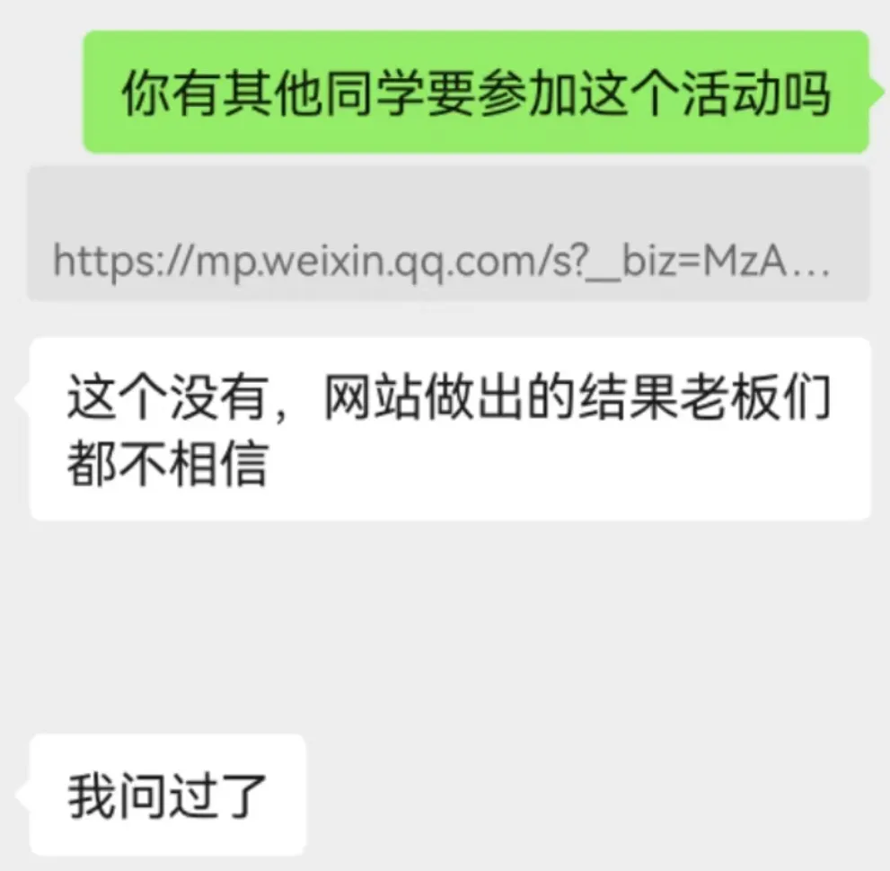
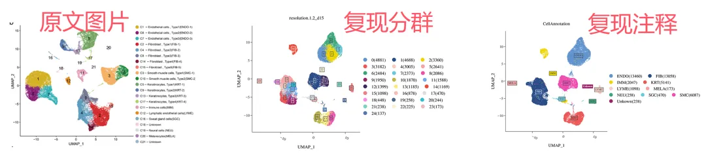
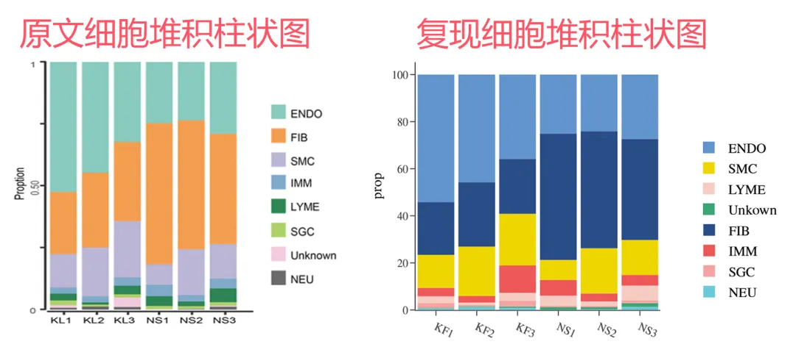
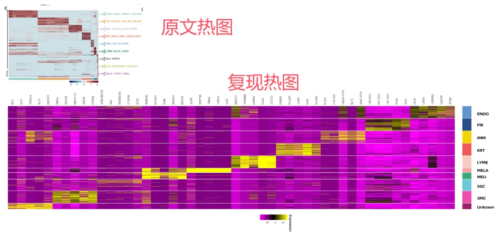
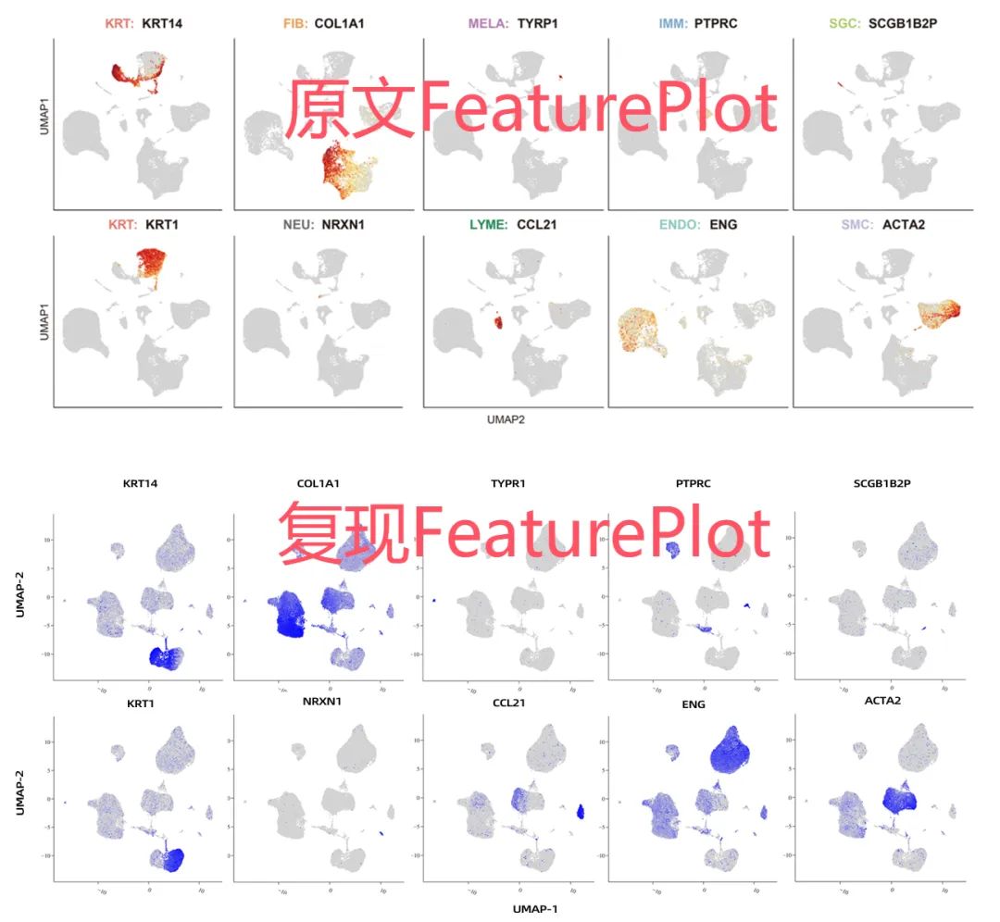
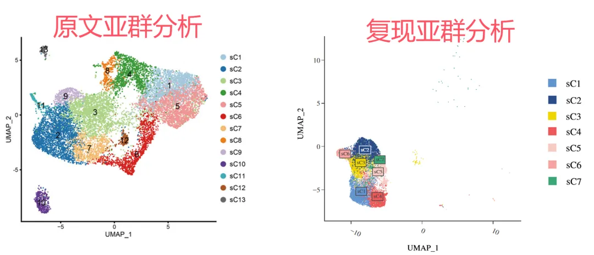
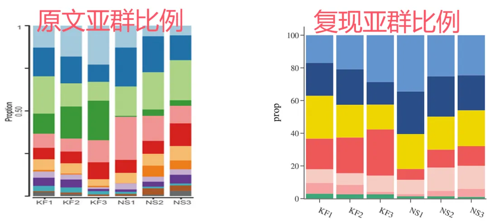
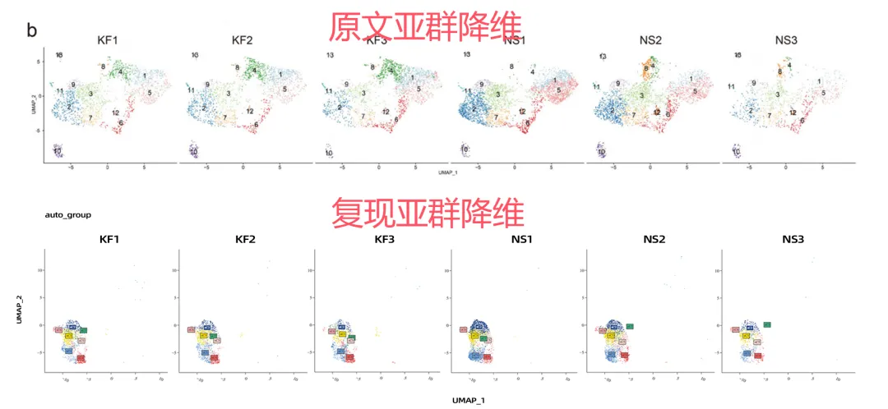
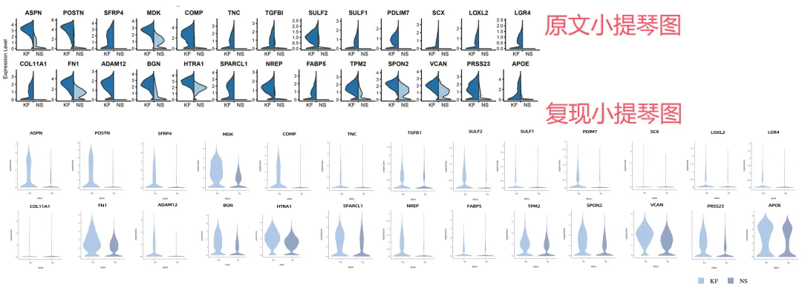
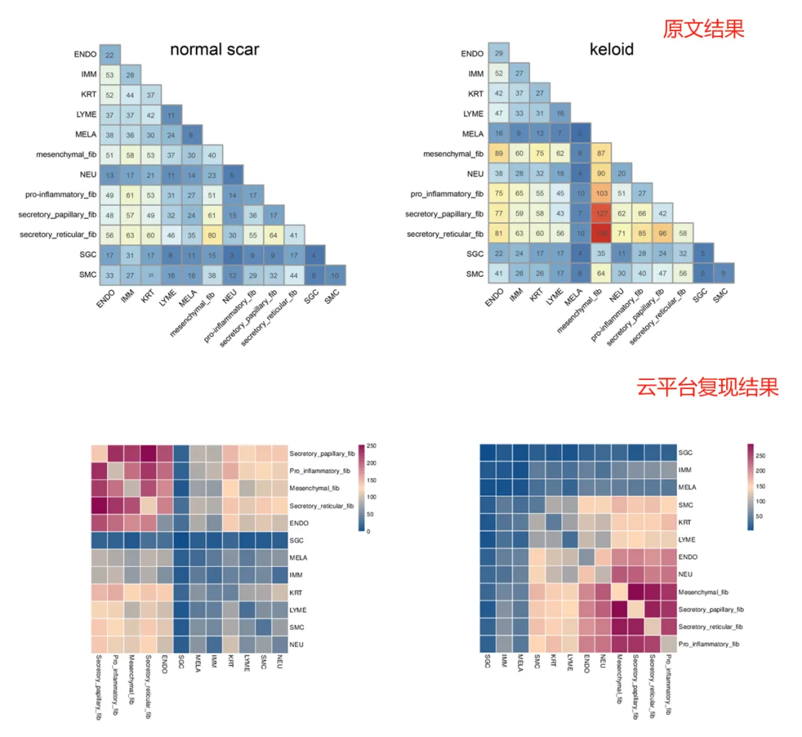

世纪大和解
原文：https://mp.weixin.qq.com/s?__biz=MzAwMzIzOTk5OQ==&mid=2247524160&idx=1&sn=c8abc0d0ca039fea2c8c8cd1cfb56700&chksm=9b3ce610ac4b6f06608f26c5ed522f45e50e3ccaa8dd7e619251f794d53bde244b4bf3a3434f#rd 合集：单细胞云平台
写在前面
此前我们在生信基地举办了生信基地第一课| 1.5天学会单细胞分析的交流活动，有同学表示实验室老板并不信任云平台做出的单细胞分析结果：

经过1.5d的学习，我们布置了如下文献结果复现作业：
文章标题 ：Single-cell RNA-seq reveals fibroblast heterogeneity and increased mesenchymal fibroblasts in human fibrotic skin diseases
文章中文标题 ：单细胞 RNA-seq 揭示了人纤维化皮肤病中的成纤维细胞异质性和间充质成纤维细胞增加
文章链接 ：https://www.nature.com/articles/s41467-021-24110-y
发表期刊 ：《Nature Communications》
1、如下图的展示 进行大群聚类注释（图b）、各细胞类型占比分布（图f）、各细胞类型高表达基因热图（图d）各细胞类型marker基因的featureplot图（图e）。

2、对成纤维细胞亚群进行重新聚类（图a）、每个样本的细胞亚型的数量占比（图c）、展示每个样本的umap降维图（图b）、做下列图中基因的小提琴图（图g）（小提琴可分开展示）。

3、 高级分析细胞通讯 展示不同分组的各细胞类型的细胞通讯数量热图；

复现结果
学完了1.5d的课程后，这位同学已经可以输出以下内容啦，其实很多复现的内容相差无几，甚至图片要比原文更加美观~
复现结果对比：


** **

** **






总是有小伙伴在学我们的单细胞代码 教程(两百篇单细胞知识帖)时深感头疼，密密麻麻的代码、繁琐的流程、巨大的数据量，这些都是劝退大家的门槛。这对这一现象，Biomamba 联合寻因生物 发布了科研利器——SeekSoul Online单细胞云平台及对应的**《2周教你学会单细胞生信全套分析》课程，准备好零代码** 发单细胞文章吧！
云平台访问链接：https://seeksoul.online/t_static/Biomamba/Biomamba.html
往期云平台使用视频教程可参考：单细胞云平台教程全收录
体验反馈问卷链接：https://www.wjx.cn/vm/QIX0xRI.aspx#
各位同学需要联系您的专属在线客服，获取demo数据后，进行操作学习。

视频教程
本系列视频我们将进行拆解动作，完整视频教程可见合集：

如何联系我们

 公众号后台消息回复不便，这里给大家留一下领取资料及免费服务器(足够支持你完成硕博生涯的生信环境)的微信号 ，方便各位随时交流、提建议（别问在么，添加时直接说来意）。此外呼声一直很高的交流群 也建好了，欢迎大家入群讨论：
公众号后台消息回复不便，这里给大家留一下领取资料及免费服务器(足够支持你完成硕博生涯的生信环境)的微信号 ，方便各位随时交流、提建议（别问在么，添加时直接说来意）。此外呼声一直很高的交流群 也建好了，欢迎大家入群讨论：
大家可以阅读完这几篇之后添加给生信入门初学者的小贴士 如何搜索公众号过往发布内容

 您点的每个赞和在看，我都认真当成了喜欢
您点的每个赞和在看，我都认真当成了喜欢